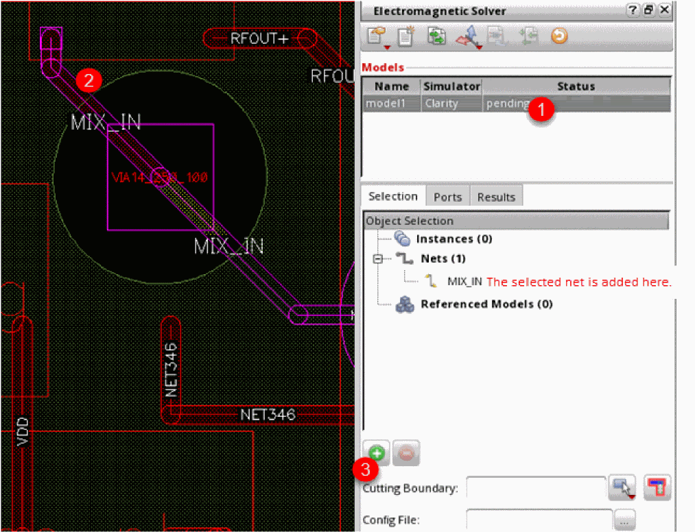
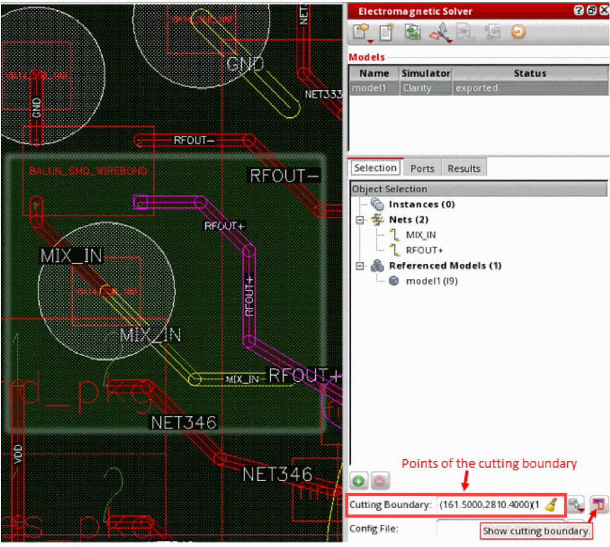

Selecting Objects from a Package Layout
While selecting objects from a package layout, you can select instances or nets from the layout canvas or the Navigator assistant. In addition, for a cross-fabric design, you can select a reference model to be included in the currently selected model.
If you are interested in considering only a section of a selected object, you can use a cutting boundary to define that section of the layout.
If you have a CMX material file to be used by the models with simulator set as Clarity, create a config file and specify the path to that file.
To select the objects to be included in a model:
- Select a model in the Models table.
-
On the layout canvas, select an instance or net that you want to add to the model.
Alternatively, select these in the Navigator assistant. -
Click Add selected instances/nets (
) on the Selection tab.
The selected net or instance is added to the Object Selection list. In the example of a package design shown below, netMIX_INis selected and added to the assistant.
 - Similarly, select more nets or instances to be placed in the same model.
-
(Optional) To create a cutting boundary (rectangular or polygonal) around the selected objects, choose a shape from the Select cut type drop-down command list and draw a boundary. This defines the boundary for an interconnect to be included in the model. The interconnects connecting the selected nets and instances from all layers are included in the model.
In the example shown below, the model includes only those shapes connected toMIX_INthat are within the defined cutting boundary. Any shape connected to this net outside of this boundary is not included in the model.
The rectangle or polygon is highlighted on the layout. The details of the points defining this boundary are also added to the Cutting Boundary field - (Optional) Click Show Cutting Boundary to toggle the visibility of the cutting boundary for the model.
-
(Optional) To connect a CMX material file to be used by Clarity 3D Solver while running simulation for a package layout, specify the path to that config file in the Config File field on the Selection tab.If you select a BGA, bond wire, or die for inclusion in the model, it is not directly added to the model. Instead, the nets connected to it are added. During port generation, coaxial ports are created at the points the net connects to the BGA, bond wire, or die. Similarly, for SMD instances, vertical ports are created where the nets are connected to that instance.
Return to top